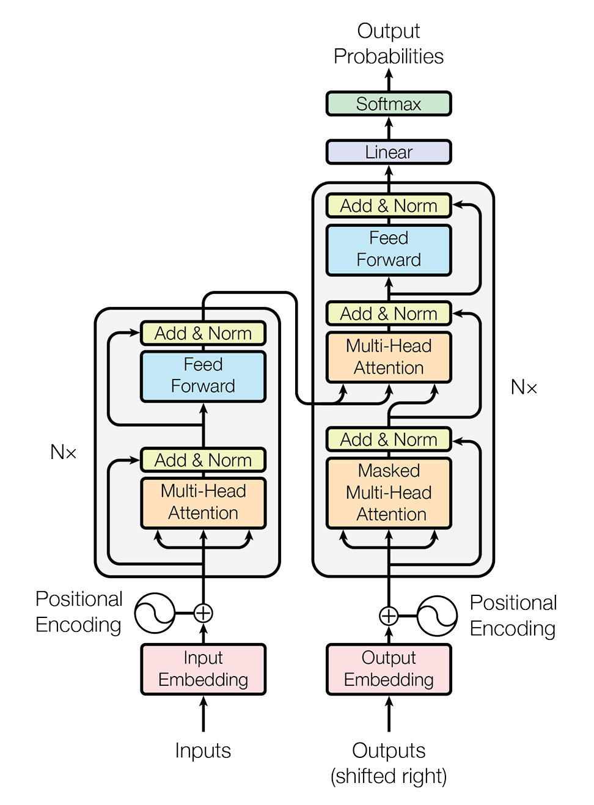

草履虫的transformer初步理解
架构

左侧：编码器（Encoder）—— “理解输入”
左半部分负责处理和理解输入的信息（比如翻译任务中的源语言句子）。
Inputs & Input Embedding（输入与嵌入）：
模型首先接收输入（Inputs），将文字转换为计算机能理解的向量（Embedding）。这里应该有一个网络，训练之后便能实现嵌入
Positional Encoding（位置编码）：
《Attention Is All You Need》使用了一套基于正弦和余弦函数的数学公式来生成位置信息。
**
$$\text{最终输入} = \text{词嵌入 (Input Embedding)} + \text{位置编码 (Positional Encoding)}$$ **
位置编码是一个向量，它的维度（Dimension）和词嵌入的维度（$d_{model}$）是一模一样的（通常是 512）。模型把这两个向量对应位置相加。
**Transformer 使用不同频率的正弦（Sine）和余弦（Cosine）**函数来生成这些向量。
**$pos$ **是词在句子中的位置（比如第 1 个词，第 2 个词…）。 $i$ 是向量维度的索引（比如第 $0, 1, 2, …, 511$ 维）。 $d_{model}$ 是模型的维度（比如 512）。
偶数维度（$2i$）使用正弦函数：
$$PE_{(pos, 2i)} = \sin\left(\frac{pos}{10000^{2i/d_{model}}}\right)$$
奇数维度（$2i+1$）使用余弦函数：
$$PE_{(pos, 2i+1)} = \cos\left(\frac{pos}{10000^{2i/d_{model}}}\right)$$
对于每一个位置 $pos$，这 512 个维度的正弦/余弦值组合起来，是独一无二的。模型只要看一眼这个向量的波形，就知道它在句子的哪个位置。
现代演进
BERT / GPT-2： 使用了可学习的位置编码（Learnable Positional Embedding）。简单说就是不给公式，直接初始化一个矩阵，让模型在训练中自己去学每个位置最好的表示向量。
LLaMA / ChatGLM / PaLM： 使用了旋转位置编码（RoPE - Rotary Positional Embedding）。这是目前的业界主流。它不是通过“加法”把位置信息加进去，而是通过“旋转”向量的角度来注入位置信息，数学性质更好，对长文本的支持更强。
BEV特征的位置编码
正弦位置编码的2D扩展
原理：假设我们有一个 $H \times W$ 的 BEV 网格。我们把嵌入向量的维度（比如 256 维）一分为二：前 128 维：用来对 X 轴坐标 进行标准的正弦/余弦编码。后 128 维：用来对 Y 轴坐标 进行标准的正弦/余弦编码。
$$PE_{(x, y)} = \text{Concat}(\text{PE}(x), \text{PE}(y))$$
BEVFormer，它在初始化那层 $200 \times 200$ 的格子时，就给每个格子加上了这种 xy 坐标编码，让每个格子知道自己在车身周围的物理位置。
可学习的位置编码
初始化一个大小为 $(H, W, D)$ 的矩阵（参数），让神经网络在训练过程中**自己去“学”**每个格子应该长什么样。
优点： 灵活，能适应特定数据集的偏差。
缺点： 外推性差（换个分辨率或网格大小就需要重新训练）。
3D空间位置编码
待深入了解 PETR (Position Embedding Transformation)
核心逻辑： 视锥位置编码 (3D Coordinates Generator) 从图像出发： 对于摄像头拍到的每一张 2D 图片，我们有每个像素的坐标 $(u, v)$ 。 反投影： 利用相机的内参（Intrinsics）和外参（Extrinsics），我们可以把这些 2D 像素通过一条射线射向 3D 空间。 离散化： 在这条射线上取不同的深度点，计算出它们在真实世界（车身坐标系）中的 $(x, y, z)$ 坐标。 编码： 将这些计算出来的真实 3D 坐标 $(x, y, z)$ 输入到一个简单的神经网络（MLP）中，生成位置编码。 注入： 把这个包含了 3D 信息的编码直接加到 2D 图片特征上。
多头注意力
缩放点积注意力
与临时抱佛脚中提到的QKV相同
$$\text{Attention}(Q, K, V) = \text{softmax}\left(\frac{QK^T}{\sqrt{d_k}}\right)V$$ Scaled Dot-Product Attention（缩放点积注意力），它是每个“头”内部的计算方式。
为什么要除以 $\sqrt{d_k}$ ？ ：
如果不除以这个数，当维度很高时，$Q \cdot K^T$ 的点积结果数值会非常大。
过程
Multi-Head Attention 模块为了保证输入输出维度一致（方便堆叠），在最后有一步**融合（Concat + Linear）**的操作。
- 拆分 (Split)：假设模型维度 $d_{model} = 512$，你有 $P=8$ 个头。我们把输入的 512 维向量切成 8 份，每份 64 维。每个头只处理属于自己的那 64 维信息。
- 独立计算 (Parallel Attention)：这 8 个头并行工作。头 1 计算出它的结果 $Z_1$（维度 64）。…头 8 计算出它的结果 $Z_8$（维度 64）。这里确实产生了 P 个向量（或者说是 P 组结果）。
- 拼接 (Concatenate) —— 关键一步：模型把这 8 个结果拼起来：
$$\text{MultiHead} = \text{Concat}(Z_1, Z_2, …, Z_8)$$ 拼完之后，维度又变回了 $64 \times 8 = 512$ 。 4. 线性变换 (Linear Projection)：最后，再通过一个由权重矩阵 $W^O$ 控制的线性层（Linear Layer），把拼好的信息混合一下。
$$\text{Final Output} = \text{Concat}(Z_1, …, Z_P) \cdot W^O$$
Add & Norm（残差连接与层归一化）
$$\text{Output} = \text{LayerNorm}(x + \text{Sublayer}(x))$$
Add (残差连接 / Residual Connection)
把输入 $x$ 直接加到输出上。
作用： 解决了“梯度消失”
在深层网络中，计算梯度需要运用链式法则（Chain Rule），也就是无数个导数连乘。
$$\frac{\partial Loss}{\partial x} = \frac{\partial Loss}{\partial y} \cdot \frac{\partial y}{\partial x} \cdot \dots$$ 如果中间的导数（$\frac{\partial y}{\partial x}$）都小于 1（通常如此），乘着乘着，梯度就变成 0 了————梯度消失。
有了 Add 的时候：正向公式是：$y = x + F(x)$我们对 $x$ 求导，结果是：
$$\frac{\partial y}{\partial x} = 1 + \frac{\partial F(x)}{\partial x}$$ 不会使梯度为0
右侧：解码器（Decoder）—— “生成输出”
解码器的输入是什么？
在翻译模型中：截至目前为止，已经翻译出来的词 在端到端模型中：一组固定的、可学习的“查询向量” (Learnable Object Queries)
Masked Multi-Head Attention（带掩码的多头注意力）
训练时的因果关系:
假设我们要把 “I love you” 翻译成 “我爱你”。 在训练时，我们把正确答案 “我爱你” 作为输入喂给解码器。当模型正在预测第 2 个字（应该是“爱”）时，它只能看到第 1 个字“我”。如果没有 Mask，模型通过注意力机制会偷看到后面的“爱”和“你”。
在计算 $softmax(\frac{QK^T}{\sqrt{d_k}})$ 之前，我们强行把当前位置之后的分数全部变成负无穷大（$-\infty$）。
自动驾驶中的应用
空间上的 Mask：Deformable Attention (变形注意力)
隐式 Mask）： 这里的 Mask 不是简单的“遮住”，而是**“只看想看的地方”**。
**传统 Attention： **我（Query）要和全图所有的点（Key）算相似度。
**Deformable Attention（变种 Mask）： **我（Query）只和离我最近的、或者我感兴趣的 4 个点算相似度。其他的点，默认 Mask 掉（权重为 0），根本不参与计算。
时间上的mask
轨迹预测 (Motion Prediction) —— 为了“不穿越” 当模型在预测 $t=2$ 的位置时，我们必须把 $t=3, 4, 5, 6$ 的真实轨迹 Mask 掉。这使用标准的因果掩码（Causal Mask / Triangular Mask）。
训练策略上的 Mask：MAE (Masked Autoencoders) —— 为了“脑补”
随机遮挡： 把摄像头拍到的画面，或者 BEV 网格，随机抠掉 40% 的块（Mask 掉，设为 0）。
让模型猜： 强迫模型利用剩下的 60% 信息，去还原那被遮住的 40%。
为什么这么做？ 这能逼迫模型理解环境的连续性。 比如：Mask 遮住了车道线的中间一段。模型必须学会：“上面有线，下面也有线，那中间这个黑洞（Mask）里肯定也是线。” 这种 Mask 不是为了生成，而是为了训练模型对环境的深度理解能力。
(⊙﹏⊙)
随后的ADD & NORM不再赘述
又是一个Multi-Head Attention（交互注意力 / Cross Attention）
输入来源：
Query (Q) 来自哪里？ 来自Decoder（下方，也就是刚刚经过 Masked Attention 处理过的信息）。 Key (K) 和 Value (V) 来自哪里？ 来自Encoder（左边，也就是对源句子的完整理解）。
Cross Attention 的输出，本质上是“被注入了新信息的 Query”。
如端到端自动驾驶中为 输出 = “抓取到了物体特征的 Query” 不过还不是坐标框 (x, y, w, h)。它只是一串包含了物体信息的数学特征。
右侧的前馈神经网络
根据attention去生成包含规划、决策信息的高维向量。大概这样粗糙理解吧
最后的输出
端到端自动驾驶与图中的翻译模型不同
翻译模型：
Linear 的作用：拉伸（Mapping）
- Decoder 输出来的向量只有 512 维。但是我们词表里有 30,000 个单词。 所以这个 Linear 层的作用是：把 512 维的特征，强行拉伸成 30,000 维 的超长向量。每一维对应一个单词的打分（Logits）。
Softmax 的作用：归一化（Probability）
- Linear 输出的分数可能是 [10.5, -3.2, 55.0, …]，这没法看。Softmax 把它们变成概率（加起来等于 1）：[0.1, 0.0, 0.9, …]。意思就是：有 90% 的概率是单词 C，有 10% 的概率是单词 A。
自动驾驶
要预测的是轨迹坐标 $(x, y)$，这是一个回归任务（Regression），而不是分类任务。
结构： 通常是 MLP（即 Linear -> ReLU -> Linear）。
为什么用 MLP？ 因为轨迹是很复杂的曲线，一层 Linear 往往拟合得不够准，多加一层 ReLU 能让它画出更顺滑的弯道。
没有softmax